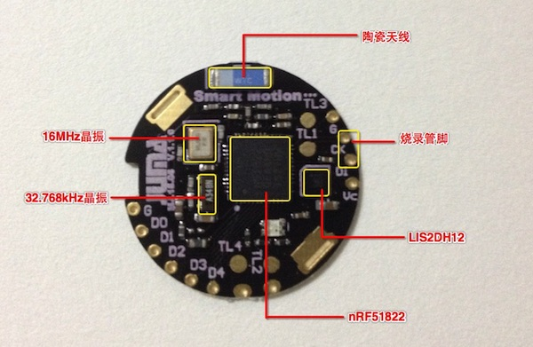

Smart Motion Platform (SMP)
设计思想
市面上的智能硬件开发板多以通用型或以入门型为目的设计的，它们有些PCB硕大，有些需要USB连续供电，都不太适宜可穿戴设备开发。
为此，我们推出了一款针对可穿戴应用的开发平台，板载蓝牙SoC和一颗三轴运动传感器，体积小巧、CR2032纽扣电池供电、可随身携带，方便工程师开发或调试运动算法，如实现计步器、运动量统计、睡眠质量检测等相关领域。
软件上，它使用了JUMA的BLE SDK，开发者利用开放的API接口可以迅速打通蓝牙底层通信；另一方面SDK的调度机制确保设备运行在功耗最优模式，即使是CR2032的纽扣电池也可以提供长时间的续航能力。
综上，Smart Motion Platform是可穿戴产品原型开发、运动算法研究的强大工具。
片上资源

- 低功耗蓝牙SoC芯片：Nordic nRF51822 QFAA；
- SoC集成ARM Cortex-M0内核；
- SoC集成256KB FLASH / 16KB RAM；
- SoC集成高精度(+-0.1℃) 温度传感器；
- 超低功耗三轴加速度计(运动传感器)：ST LIS2DH12；
- RGB三色LED；
- 16MHz和32.768kHz时钟芯片；
- 5个GPIO扩展接口，可配置成I2C、SPI总线、ADC采样等；
- CR2032纽扣电池供电；
硬件特性
- 嵌入式2.4GHz和BLE收发器；
- 峰值接受电流13mA；
- 峰值发射电流10.5mA(0dBm)；
- 发射功率范围: -20dBm~4dBm；
- 微安级别待机电流；
- 尺寸: 直径24mm x 厚度2.0mm；
- 续航: 220mAh的CR2032典型续航时间为1年；
软件特性
- JUMA SDK；
- 用户代码区：32KB FLASH / 4KB RAM；
- 低功耗任务调度机制，支持32个任务调度；
- 开放BLE API接口（嵌入式端/APP端）；
- 三轴传感器数据接口（嵌入式端/APP端）；
- 嵌入式软件空中升级（嵌入式端/APP端）；
- 计步算法参考例程；
- To Be Continued...；